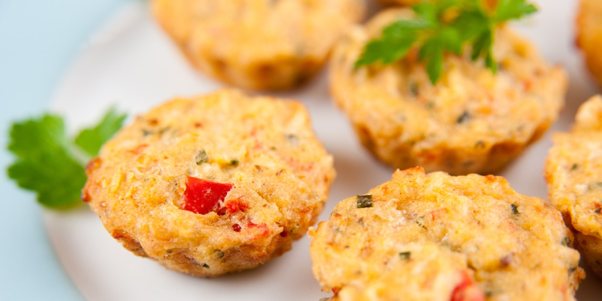

Crabcake Recipe

Ingredients:
- 1 lb. jumbo lump or backfin crab meat
- 2 slices bread or bread crumbs
- 1 tbsp. mayonnaise (light or regular)
- 1 tbsp. Dijon mustard
- 2 tsp. Old Bay seasoning
- 1 tbsp. snipped parsley
- 1 egg (or substitute for special diets)
- tartar sauce or cocktail sauce
Directions:
Beat the egg in a bowl. Trim the crusts from the bread and break the slices into small pieces. Add these pieces to the egg. Mix in the mayonnaise, Dijon mustard, Chesapeake seasoning and parsley, and beat well.
Place the crabmeat in a bowl and pour the egg mixture over the top. Gently toss or fold the ingredients together, taking care not to break up the lumps of crabmeat.
Form the cakes by hand into patties about 3 inches around and 3/4-inch thick. Shape should be like a cookie, not like a meatball or golf ball. Place the cakes in the refrigerator for at least 45 minutes before cooking. This is very important so the cakes don't fall apart.
Broil the Crab Cakes:
Slip them under a preheated broiler until nicely browned, turning to cook evenly, about 4 to 5 minutes on each side.
Or saute:
Heat a small amount of butter or olive oil in a skillet and saute the cakes, turning several times, until golden brown or about 8 minutes total cooking time.
Serve at once with tartar sauce, mustard, or cocktail sauce on the side.
Serves 6 people